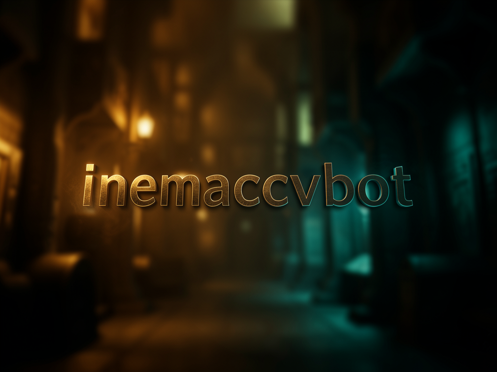

@inemaccvbot é o cliente fino da fila mkivideos: manda instrução em texto, ele enfileira, avisa quando termina e entrega o MP4 — sem renderizar nada por conta própria.

O inemaccvbot não renderiza vídeo nenhum. Ele traduz mensagens do Telegram em jobs para a fila mkivideos (daemon systemd já rodando), acompanha o andamento e entrega o resultado — nunca cria conteúdo fora de uma skill registrada.
Cada linha da mensagem vira uma instrução independente — várias linhas enfileiram vários vídeos de uma vez.
Instrução que não mapeia para explicativo, curso ou demo é recusada com explicação — o bot enfileira o que consegue mapear e avisa o que não vai fazer.
Só chat ids em ALLOWED_CHAT_IDS são atendidos; qualquer outro é ignorado em silêncio e logado.
O parser tenta primeiro o formato leve (uma linha por job); texto fora do padrão cai
no fallback claude -p (Opus, esforço médio), que só traduz — nunca pesquisa nem
renderiza.
Não roda no bot — só anexa uma instrução ao job. É o agente de render do mkivideos que pesquisa a web antes de escrever o roteiro.
O bot escolhe um caminho em NARRACOES_DIR e pede ao agente para salvar ali a narração completa; o watcher entrega o arquivo (mensagem ou documento) quando o job termina.
Ao terminar, o watcher move o MP4 para ~/projetos/yt-pub-livesN/imports/videos e notifica caminho, duração e destino.
O bot é só a ponte — sem a fila mkivideos rodando, nada é renderizado.
Runtime do bot (grammY + better-sqlite3).
# checar versão node -v
Daemon systemd já rodando, com CLI mki.sh e banco compartilhado.
# status do daemon systemctl --user status mkivideos
Token do @inemaccvbot criado no BotFather, preenchido no .env.
# nunca commitado TELEGRAM_BOT_TOKEN=...
claudeUsado no fallback de interpretação de texto livre (Opus, esforço médio).
# checar instalação claude --version
Comandos reais deste repositório — nenhum placeholder.
Copie o .env.example e preencha token e chat ids permitidos.
git clone https://github.com/inematds/inemaccvbot.git cd inemaccvbot cp .env.example .env # preencher TELEGRAM_BOT_TOKEN e ALLOWED_CHAT_IDS
Instala dependências e compila TypeScript.
npm i npm run build # gera dist/index.js
Roda em background, reinicia sozinho em caso de falha.
mkdir -p ~/.config/systemd/user cp deploy/inemaccvbot.service ~/.config/systemd/user/ systemctl --user daemon-reload systemctl --user enable --now inemaccvbot # ou: npm run dev, pra rodar em foreground
Uma linha por job — cabem várias na mesma mensagem.
explicativo: O que é RAG | 9:16 | lives3
explicativo: Computação quântica | pesquisa | narracao | lives2
curso: https://inematds.github.io/skillsx/ | modulo t1m1
demo: https://app.exemplo.com | lives7
Comandos de controle da fila e entrega do resultado.
/fila # running + queued com posição /status <id> # detalhe do job /cancelar <id> # cancela job na fila /enviar <id> # manda o MP4 aqui (≤50 MB) /skills # o que o bot sabe fazer /help # ajuda completa
O formato é <skill>: <assunto ou link> | campo | campo | .... Texto livre
também funciona — Claude interpreta, mas só mapeando para skills registradas.
explicativo: O que é RAG | 9:16 | lives3
Vídeo explicativo PT-BR (skill video-explicativo). Campos: 9:16/vertical, pesquisa, narracao/texto, livesN.
curso: https://inematds.github.io/skillsx/ | modulo t1m1
Vídeo de curso INEMA a partir do link (skill videos-cursos-inema). Campos: modulo X, curso X.
demo: https://app.exemplo.com | lives7
Vídeo demonstrativo de um app/site (skill video-demonstrativo).
<url> crie um vídeo explicativo ... e me retorne também a narração em texto
Cai no fallback Claude — extrai todo job que mapeia e avisa ⚠️ não vou fazer: ... só para o que sobra fora do escopo.
O v1 (spec docs/superpowers/specs/2026-07-16-inemaccvbot-design.md) está implementado e revisado. Itens abaixo são evolução, não bug — ver docs/V2-BACKLOG.md.
timesmkt3 (ainda não existe). Quando existir, basta adicionar entrada em config/skills.json e reiniciar — o registro é plugável, sem mudança de código.--pastaÚnico slot argv sem validação de espaço (só alcançável via PROJETOS_DIR, config de operador — não input de usuário).-- no assuntoÉ engolido pelo loop de flags do mkivideos (pré-existente, cosmético, só afeta usuários da allowlist).ALLOWED_CHAT_IDSEntrada malformada falha fechado em silêncio (seguro, mas um typo vira "o bot não responde" sem explicação); sugestão é logar os ids carregados no boot.